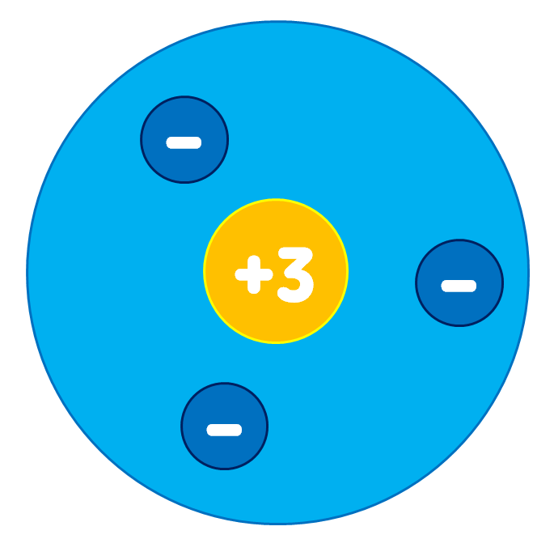

원자
원자
물질을 이루는 기본 입자
원자의 구조
원자핵과 전자로 이루어져 있다.

원자핵
+ 전하를 띤다.
원자의 중심에 위치한다.
원자 질량의 대부분을 차지한다.
전자
- 전하를 띤다.
원자핵 주위를 끊임없이 돌고 있다.
* 원자핵의 + 전하량은 해당 원자의 원자번호와 같다.
원자의 특징
원자의 종류에 따라 원자핵의 전하량과 전자의 개수가 다르다.
원자는 전기적으로 중성이다 -> 원자핵의 +전하량과 전자의 총 -전하량이 같기 때문
원자는 크기가 매우 작다 -> 수소 원자 1억 개를 한 줄로 늘어놓아야 1cm 정도이다.
원자핵과 전자의 크기는 원자의 크기에 비해 매우 작다. -> 원자 내부는 대부분 빈 공간이다.
원자 모형
눈에 보이지 않는 원자를 이해하기 쉽게 모형으로 나타낸 것
원자의 중심에 원자핵을 표시하고, 원자핵 주위에 전자를 배치한다.